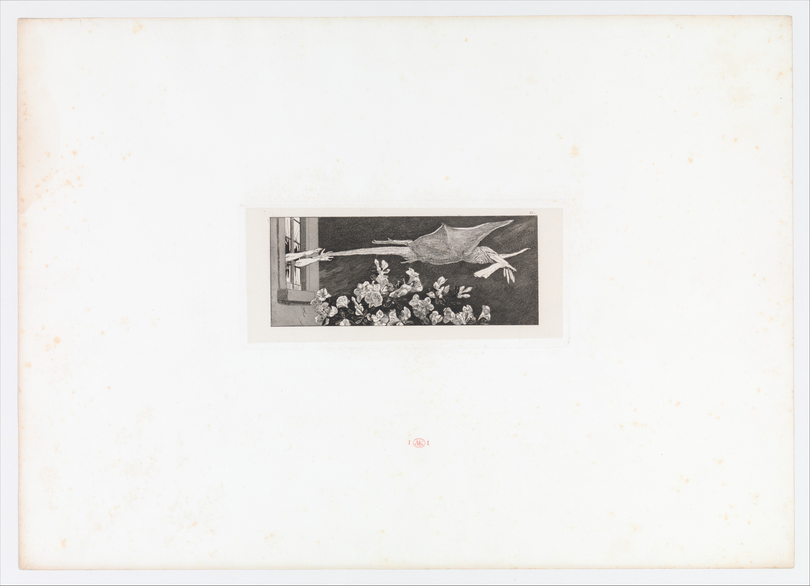

いつもの物が、夢の中で別の役になる。
手袋という小さな持ち物が、怪物にさらわれる大事件の中心になっています。窓から伸びる腕と、右へ飛ぶ翼の向きを見比べてみましょう。
作品・制作の例7件を紹介しています。実作品画像0点、参照・関連画像1点。画像の収集は継続中です。
美術・文学の運動
Surrealism
時計がやわらかく曲がり、カップが毛皮に包まれる。シュルレアリスムは、夢や、ふだん意識していない心の動きを手がかりに、当たり前の見方を問い直した運動です。日本語では超現実主義（ちょうげんじつしゅぎ）とも呼びます。
参照・関連資料を見る

画像を表示できませんでした。下の出典ページで確認できます。
マックス・クリンガー（版画）／F・フェルジング（印刷） / 1881年
日本語の見出しは、場面を伝えるための説明名です。
1881年の版画集の第9図です。
初版で、版を直して刷った五つの段階のうち第2段階にあたる所蔵品です。
紙の余白と端を含め、提供画像の全体を保持しています。
細部を見たいときは、画像をタップすると大きな原画像を開けます。
1924年に始まる運動の正式なメンバー作品ではなく、関連する先行例として紹介します。
手袋という小さな持ち物が、怪物にさらわれる大事件の中心になっています。窓から伸びる腕と、右へ飛ぶ翼の向きを見比べてみましょう。
怪物も窓も花も、白と黒の細かな線で描かれています。現実にありそうな描き方と、ありえない出来事が同じ画面に並びます。
マックス・クリンガー《Abduction》、1881年。F・フェルジング印刷。メトロポリタン美術館、2009.53。Purchase, The Isaacson-Draper Foundation Gift, 2009。Public Domain／CC0。
出典で作品・資料を見る ↗CC0 1.0 Universal
所蔵館は、この1881年の版画をパブリックドメインとして公開しています。
所蔵館のオープンアクセス方針により、このパブリックドメイン作品の画像はCC0で公開されています。
提供された原JPEGを無加工で保持しています。
所蔵館による個別の指定と画像公開方針に基づきます。すべての国での権利保証や、所蔵館の推奨を意味しません。
出典先の原画像を開く ↗画像の利用条件 ↗この項目の主な7作例の画像は準備中です。ここには、関連する先行例としてクリンガーの1881年の版画を掲載しています。参照・関連画像1点として別に数えています。
絵画
硬い時計がやわらかくなる場面を、細かな描写で見せる代表例。
作品・資料の出典を見る ↗作品名（出典表記）：The Persistence of Memory（記憶の固執）
Salvador Dalí（サルバドール・ダリ） / 1931 / 絵画
立体作品
日用品と毛皮の組み合わせが、使い方と感覚を変えてしまう例。絵画以外への広がりを示す。
作品・資料の出典を見る ↗作品名（出典表記）：Object（オブジェ）
Meret Oppenheim（メレット・オッペンハイム） / 1936 / 立体作品
絵画
見慣れた室内や服装を描きながら、筋道の定まらない物語をつくる例。
作品・資料の出典を見る ↗作品名（出典表記）：The Menaced Assassin（脅かされる暗殺者）
René Magritte（ルネ・マグリット） / 1927 / 絵画
素描（そびょう）
先に完成図を決めず、動く手から形を探す方法の例。線から現れた形を、意識して描き足す段階もありました。
作品・資料の出典を見る ↗原題：Automatic Drawing
アンドレ・マッソン / 1924年 / 素描（そびょう）
このページでは作品画像を掲載していません。所蔵館の出典で作品を確かめられます。
絵画
キャリントン自身の想像の世界を示す作品。囲われた人物やつながれた馬が、自由と束縛（そくばく）の関係を考える手がかりになります。
作品・資料の出典を見る ↗原題：Green Tea
レオノーラ・キャリントン / 1942年 / 絵画
このページでは作品画像を掲載していません。所蔵館の出典で作品を確かめられます。
絵画
細かな物語の場面と、偶然の模様を組み合わせた作品。衣服や背景には、ぬれた絵の具に別の材料を押しつけて模様を移す方法が使われています。
作品・資料の出典を見る ↗原題：The Juggler (The Magician)
レメディオス・バロ / 1956年 / 絵画
このページでは作品画像を掲載していません。所蔵館の出典で作品を確かめられます。
絵画
別々の場所から集めたような姿を、一つの画面に組み合わせる。日本で独自に広がったシュルレアリスムを考える手がかりです。
作品・資料の出典を見る ↗原題：海 / Sea
古賀春江（こが はるえ） / 1929年 / 絵画
作品画像はこのページでは掲載していません。所蔵館の出典で作品を確かめられます。
日本でシュルレアリスムが広がり始めた時期の重要な作品。夢だけでなく、写真や科学技術の図像を組み合わせる、理性的な方法にも目を向けています。
出発点には詩や文章の実験があります。意味を整えすぎず、浮かんだ言葉を書き続ける。ブルトンは1924年の宣言で、こうした方法から、普段は表に出てこない心の動きを探ろうとしました。
これは「いいかげんにつくる」ということではありません。理屈や常識だけで世界を説明できるのか、という問いです。絵を見たときも、正解の物語を急いで決めず、何がいつもと違うかを探せます。
ダリの《記憶の固執（こしつ）》は、ありえない場面を細かく描きます。一方、考えて決める前に手を動かす方法や、偶然できた跡から形を見つける方法も使われました。同じ運動の中に、違うつくり方があるのです。
マックス・エルンストは、木の床などに置いた紙を鉛筆でこすり、凹凸（おうとつ）の跡を写すフロッタージュを試しました。初めから全部の形を決めるのではなく、出てきた模様から次の形を考えます。
メレット・オッペンハイムの《オブジェ》は、カップ、受け皿、スプーンを毛皮で覆った作品です。器の形はわかるのに、飲むことを想像すると戸惑います。見た目と、手や口で感じるはずの感覚がぶつかるからです。
絵の中だけを不思議にするのではなく、本物の日用品の関係を変える。1936年にパリとニューヨークで展示されたこの作品は、小さな道具も考え方を揺さぶる力を持つことを示します。
この運動の歴史を、男性の画家と、そのモデルになった女性だけで語ることはできません。オッペンハイム、レオノーラ・キャリントン、レメディオス・バロらは、それぞれの作品を生み出した作者です。
女性たちは、自分の姿や身体、自由を自分の側から表しました。ロサンゼルス郡立美術館の展覧会も、メキシコとアメリカで活動した女性たちを、誰かの妻や「ひらめきを与える人」ではなく、独立した制作者として紹介しています。
日本では、1920年代末から1930年代に、写真や科学との関係を考える試みがありました。エジプトのカイロでは、芸術の自由を守る活動と結びつきました。同じ言葉でも、土地によって問いは変わります。
戦争や移住も、人と作品のつながりを変えました。メキシコではキャリントンやバロらが交流します。各地の活動を単なる「ヨーロッパのまね」と考えず、何に対して自由を求めたのかを見ることが大切です。
紙を折り、前の人が描いた部分を隠しながら、別の人が描き足す遊びがあります。「優美な死骸（ゆうびなしがい）」と呼ばれる共同制作です。つなげたとき、一人では考えなかった姿が現れます。
雑誌も大事な場所でした。詩、宣言、作品の図版を載せて、離れた土地へ考えを届けます。完成した絵だけでなく、人が集まり、やり取りする仕組みも運動の一部でした。
夢のような場面を描く試みは、シュルレアリスムより前にもありました。
クリンガーが1881年に発表した手袋の版画集では、ありふれた持ち物が不思議な物語の中心になります。
モマの解説は、この版画が後のシュルレアリストたちに影響したと説明しています。
クリンガーは1920年に亡くなっており、1924年に始まる運動のメンバーではありません。
フランス・パリ
1924年の宣言は重要な節目です。文学、美術、共同制作の試みが結びつきました。
ベルギー
マグリットの絵では、服や部屋などの普通の姿と、説明しきれない出来事が並びます。
日本
理性や科学との関係を問い直す展開もあり、「夢だけの芸術」には収まりません。
エジプト・カイロ
1938年の宣言を出した人々は、政治による芸術への圧力にも反対しました。
メキシコとアメリカ
土地を移った作者たちの交流から、独自の作品が生まれました。
言葉を自由につなぐ文学の実験が進む。
ブルトンが最初の「シュルレアリスム宣言」を発表。
エルンストがフロッタージュを使い始める。
ダリが《記憶の固執》を描く。
オッペンハイムの《オブジェ》がパリ、ニューヨークで紹介される。
カイロの芸術家や作家たちが、芸術の自由を守る宣言を発表。
1924年、詩人アンドレ・ブルトンがパリで宣言を発表しました。しかし、一人の画家がつくった絵の描き方ではありません。言葉、写真、日用品、共同制作へと広がり、各地の人が、自分の暮らしや社会の問題に引きつけて考え直していきました。
決まった配色はありません。現実にありそうな色でも、物の形や組み合わせが変わると不思議に感じるかを見ます。
共通の書体がある運動ではありません。題名が作品の読み方をどう変えるかにも注目できます。
《オブジェ》では、飲むためのカップと、口に入れると困る毛皮が出会います。目で見る形と、想像する手ざわりを比べます。
《脅かされる暗殺者》は、部屋と人の配置から事件を想像させます。それでも、何が起こったかを一つの答えに決められない場面です。
ダダと人や考えのつながりがありますが、同じ運動ではありません。「変なものが描いてある」という見た目だけでも決まりません。いつ、誰が、どの仲間や出版物と関わってつくったのかを合わせて見ると、歴史上の運動と、現代の夢のような表現を区別できます。
身近な物の組み合わせや、言葉と絵の関係を変えると、いつもの見方が揺らぎます。ただし、変わった広告や生成画像をすべて歴史上のシュルレアリスムと呼ぶわけではありません。作品が生まれた時代と、作者の問いを一緒に考えてみましょう。
名前を開くと、生没年、主な仕事、作品と出典を読めます。ここに挙げた人だけで、この項目の全体を説明するものではありません。
Salvador Dalí
スペインの画家。1920年代末にパリのシュルレアリスムと深く関わり、夢のような場面を精密に描きました。絵画だけでなく、文章や映画にも活動を広げました。
《記憶の固執》を、運動にあった多様な方法の一つとして紹介します。ダリの描き方だけがシュルレアリスムだったわけではありません。
MoMA所蔵の1931年の絵画。作品番号に含まれる1934年を制作年とはしません。
人物の出典：ニューヨーク近代美術館 ↗ / ニューヨーク近代美術館 ↗ / メトロポリタン美術館 ↗
Meret Oppenheim
スイスの美術家。1930年代にシュルレアリストたちと作品を発表し、日用品の意外な組み合わせを試しました。絵画、立体、コラージュ、宝飾など、長い活動を通じて幅広い制作を続けました。
毛皮で覆った器を制作した作者として紹介します。有名な一作品や、他の作家のモデルという役割だけに活動を限定しません。
1936年、パリで制作された一組の作品。所蔵番号のa–cは構成する三点を示します。
人物の出典：ニューヨーク近代美術館 ↗ / ニューヨーク近代美術館 ↗ / ニューヨーク近代美術館 ↗
René Magritte
ベルギーの画家。見慣れた人物や物を描きながら、説明しきれない関係をつくりました。1927年にパリへ移り、シュルレアリスムの絵画に重要な役割を果たしました。
細かく描かれた室内の中で、物語が一つに定まらない絵画の例として紹介します。作品の制作地と作者の移住歴は区別します。
MoMAは制作地をブリュッセルと記録しています。同じ年に作者がパリへ移ったことから、この絵をパリ制作としません。
人物の出典：ニューヨーク近代美術館 ↗ / ニューヨーク近代美術館 ↗ / メトロポリタン美術館 ↗
André Masson
フランスの画家。あらかじめ主題を決めずに線を引く、自動描画の実験を進めました。生まれた線から形を見つけ、ときには意識して描き足す方法で、無意識と制作の関係を探りました。
文学の自動記述と関係する素描の実験を示します。「最初から最後まで意識を使わない制作」とは説明しません。
MoMAの年代表記は「(1924)」。同名の別の素描ではなく、作品番号873.1978の一点を参照します。
人物の出典：ニューヨーク近代美術館 ↗ / ニューヨーク近代美術館 ↗ / メトロポリタン美術館 ↗
Leonora Carrington
英国に生まれた画家・作家。欧州でシュルレアリストたちと交流し、戦争を逃れてニューヨークを経由し、メキシコへ移りました。動物と人の境界を越える姿や、不思議な出来事を、絵と文章で表しました。
移住によって広がった運動を示す一人です。メキシコでの長い活動と、1942年の《緑茶》の制作背景を一括りにしません。
MoMAはニューヨークへ移った後の経験と結びつけて解説しています。囲われた人物を作者自身と見る解釈はありますが、唯一の答えではありません。
人物の出典：ニューヨーク近代美術館 ↗ / ニューヨーク近代美術館 ↗ / National Museum of Women in the Arts ↗
Remedios Varo
スペインに生まれた画家。パリのシュルレアリストたちと交流し、戦争を逃れて1941年にメキシコへ渡りました。細かな描写と偶然できる模様を組み合わせ、幻想的な人物や出来事を描きました。
《曲芸師》では、下描きを移す方法と、絵の具の模様を転写する方法を併用しています。精密な描写と偶然の利用を対立させずに見られます。
板に描かれた作品で、キャンバス画ではありません。表面の模様にはデカルコマニーが使われています。
人物の出典：ニューヨーク近代美術館 ↗ / ニューヨーク近代美術館 ↗ / National Museum of Women in the Arts ↗
Koga Harue
福岡県久留米市に生まれた画家。水彩画から出発し、さまざまな前衛表現を試しました。晩年は、写真や科学雑誌などの図像を一つの画面へ組み合わせる絵画を制作し、詩作も続けました。
《海》以降の作品は日本の受容の端緒に位置づけられますが、合理的な構成や同時代のメディアとの関係もあります。パリのグループの正式なメンバーとはしません。
1929年の第16回二科展に出品。1964年度の購入は所蔵に関する年で、制作年ではありません。
人物の出典：国立アートリサーチセンター ↗ / 国立美術館 ↗
Max Klinger
ドイツの版画家・画家・彫刻家。複数の版画を連ね、現実の出来事と夢や空想を交えた物語を描きました。手袋を題材とする版画集は、その代表的な仕事です。
クリンガーの版画が後のシュルレアリストたちに影響したことを、ニューヨーク近代美術館が解説しています。1920年に亡くなったクリンガーは、1924年に始まる運動のメンバーではありません。
日本語の見出しは、場面を伝えるための説明名です。 手袋をめぐる連作の第9図。ここで取り上げるのはメトロポリタン美術館の所蔵品で、ニューヨーク近代美術館の版画集とは別の個体です。
人物の出典：メトロポリタン美術館 ↗ / メトロポリタン美術館 ↗ / ニューヨーク近代美術館 ↗
ここに挙げた作品は、考え方やつくり方の違いを比べるための例です。この分野の全地域・全時代を網羅するものではありません。
作品・制作の例7件を紹介しています。実作品画像0点、参照・関連画像1点。画像の収集は継続中です。